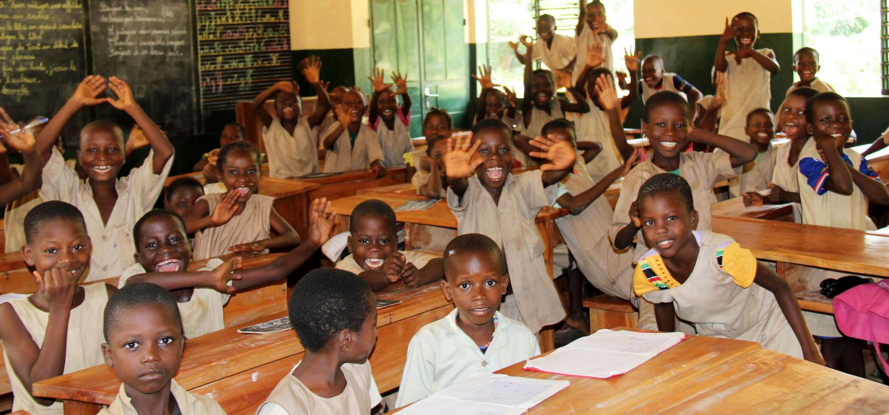

 L'éducation est l'un des investissements les plus importants qu'un pays puisse faire pour son avenir. C'est pourquoi le GPE aide les pays à faible revenu à faire en sorte que chaque enfant y reçoive une éducation de qualité.
L'éducation est un puissant agent de changement. Elle améliore la santé et les moyens de subsistance, contribue à la stabilité sociale et stimule la croissance économique à long terme. L'éducation est également essentielle à la réalisation de chacun des 17 objectifs de développement durable.
Le GPE aide les pays partenaires à transformer leurs systèmes éducatifs, afin de garantir à chaque fille et chaque garçon de bénéficier de l'éducation de qualité nécessaire pour libérer son potentiel et lui assurer de contribuer à la construction d'un monde meilleur.

Guyana : combler le déficit d'apprentissage des élèves les plus vulnérables
Commence dès le plus jeune âge L'éducation de la petite enfance prépare les enfants à leur apprentissage futur 41 % des enfants sont inscrits dans l'enseignement préprimaire dans les pays partenaires du GPE Nécessite des enseignants qualifiés Un enseignant efficace est le facteur le plus important pour qu'un élève apprenne bien 67 millions d'enfants de plus ont des enseignants qualifiés dans les pays partenaires du GPE
Dans un premier temps, l'école de la République apporte une culture commune à tous les enfants auxquels elle a accès. Donc, ces enfants non-francophones et/ou issus de la communauté du voyage découvrent une nouvelle culture, à travers l'école, qui les enrichit.Puis, ces enfants, en retour, diffusent leur propre culture à tous leurs petits camarades. J'ai été particulièrement impressionnée par la capacité d'adaptation, d'assimilation et d'intégration des enfants. Par exemple, ils sont capables de chanter "Joyeux Anniversaire" dans de multiples langues, comme le français, l'anglais, le portugais, l'espagnol, l'allemand, l'italien, l'arménien, simplement parce qu'un de leur camarade était originaire de ces pays ou que l'enseignante les a ouvert vers d'autres horizons. Ainsi, tous les enfants s'enrichissent et apprennent à connaître d'autres cultures que la leur.
Enfin, pour l'enseignant(e), ce projet revêt une nouvelle mission très valorisante, d'adaptation, d'intégration et d'acteur dans la société. Le professeur des écoles n'est plus seulement le pédagogue, enfermé dans sa classe, à l'écart de la société, il participe à l'intégration et à la construction de nouveaux citoyens, ouverts sur le monde, les différences et la tolérance. Cet aspect du métier permet de construire des projets qui dépassent le simple cadre de l'instruction.Cependant, cette vison quelque peu angélique ne doit en aucun cacher des inconvénients et des réalités plus complexes...
En effet, de nombreux inconvénients peuvent survenir. Tout d'abord, concernant les enfants itinérants, la culture communautaire est souvent bien plus forte que la culture de l'école. En effet, ces enfants poursuivent rarement leur scolarité au delà du CM2, ils pourraient mettre en péril la communauté en rencontrant et en se mariant avec "des gauchos"(personnes extérieures à la communauté). Ainsi, cette situation s'avère compliquée pour le professeur des écoles, car il ne va pas pouvoir exploiter l'ensemble des capacités de ces élèves, ni leur faire exprimer toute leur personnalité; il devra se contenter de leur apporter les bases en écriture, lecture et calcul. L'ascenseur social de l'école n'est pas pris en compte pour ces enfants...
Puis, l'organisation de la classe est très complexe et peut tourner au casse-tête pour l'enseignant. En effet, il y a des enfants qui arrivent en cours d'année, d'autres partent, le nombre d'élèves n'est jamais fixe. De plus, les enfants non-francophones ne comprennent pas forcément les consignes, il faut donc s'occuper d'eux, tout en s'occupant du reste de la classe: les d"calages peuvent rapidement être importants entre les enfants, malgré la Clin; il faut prévoir des exercices spécifiques pour ces enfants afin de les faire progresser sur de multiples points.Enfin, l'enseignant a beaucoup de difficultés à construire des projets avec la classe toute entière, comme des classes de neige ou découverte. En effet, la mairie ne donnera les subventions que pour un nombre minimal d'élèves participants, donc avec une classe fluctuante, les obstacles deviennent importantes.